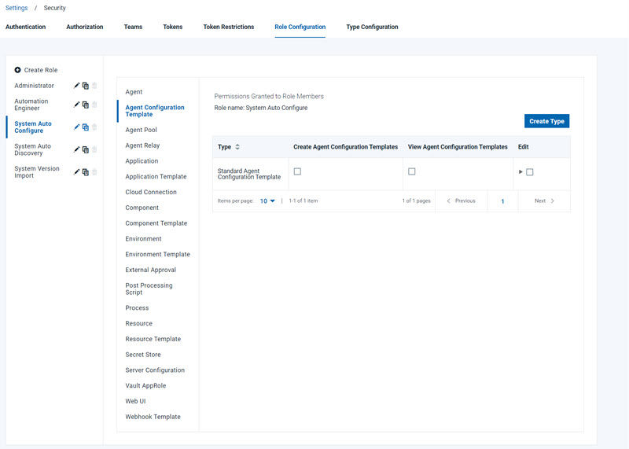

Creating users manually
You can manually create users on the server for internal security and SSO type authentication realms.
Before you begin
Editing user information requires permission to view the Authentication (Users)page. Make sure that the user's role has the Manage Teams and WebUI | Settings Tab permissions enabled.

Procedure
- On the server, click .
-
In the Create User dialog box, enter the user information:
- Save your work when you are done.